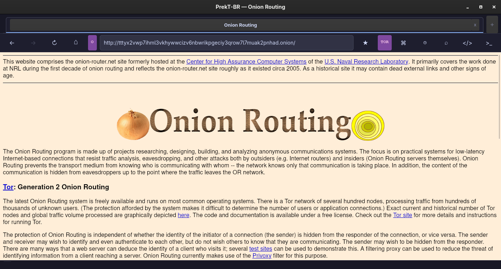
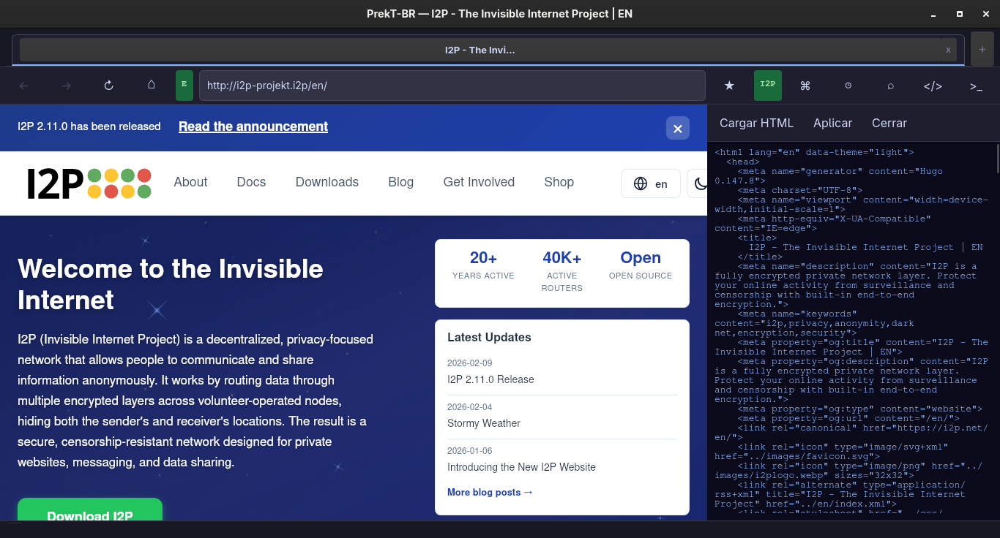
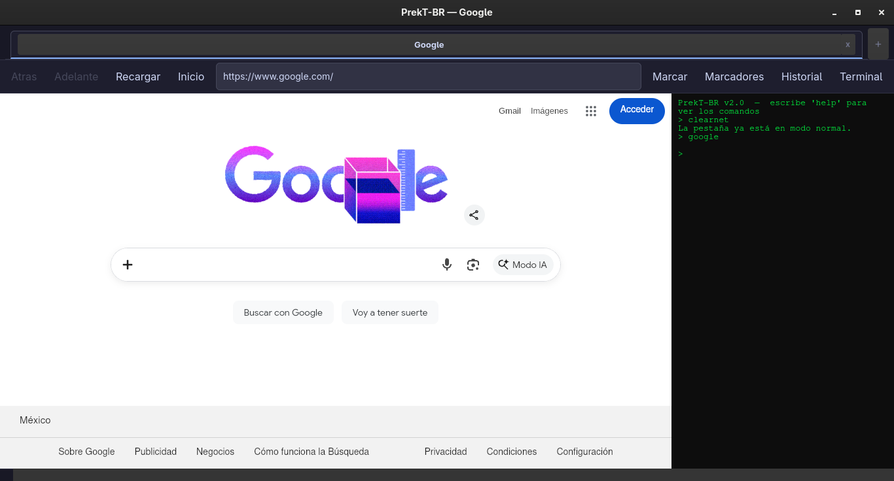
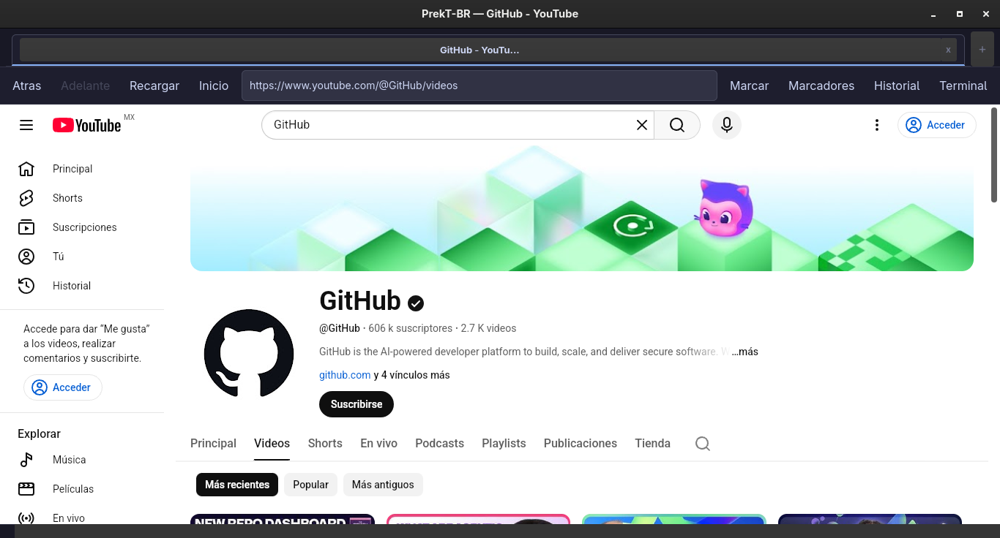

PrekT Browser o simplemente PrekT-BR es un navegador hecho en Python/C++/JS con GTK y WebKitGTK :)
Tiene varias funcionalidades unicas como ser el primer I2P Browser de Linux (no es oficial), tener soporte I2P, Tor y obviamente clearnet.
Tiene una "Terminal"/"Consola"/"CMD" con comandos personalizados para hacer cosas como buscar, abrir URL, activar modos, etc.
Es desarrollado por Lannerig/GNOMECinnamolhyia, el mismo programador de la pagina de mis amigos, llamada yupibot.42web.io! :]
Tienes 2 formas, o descargandolo desde mi GitHub
o desde esta misma pagina! :D
Cuando descargues el archivo desde aqui van a venir 3 cosas (Py):
1. new.png → es el logo del navegador
2. main.py → es la version 2 del navegador (version 2.1.5)
3. newtab.html → es el HTML de la nueva pestaña
Cuando descargues el archivo desde aqui van a venir 4 cosas (CPP):
1. new.png → es el logo del navegador
2. main.cpp → es la version 2 del navegador sin compilar (version 2.1.5)
3. main → es la version 2 del navegador ya compilado (version 2.1.5)
4. newtab.html → es el HTML de la nueva pestaña
Cuando descargues el archivo desde aqui van a venir 3 cosas (JS):
1. new.png → es el logo del navegador
2. main.js → es la version 2 del navegador (version 2.1.5)
3. newtab.html → es el HTML de la nueva pestaña
Sistema:
❏ Arch Linux (o algun derivado como EndeavourOS, Manjaro, Archcraft, CachyOS, Garuda Linux, etc)
❏ systemd (basta con systemd, puedes usar el gestor de arranque que quieras)
❏ Internet
Paquetes instalados
❏ gtk4
❏ webkitgtk-6.0
❏ python
❏ python-gobject
❏ xdg-desktop-portal
❏ xdg-desktop-portal-gtk
❏ gobject-introspection
❏ tor
❏ torsocks
❏ i2pd
❏ gjs
❏ gcc
Si vas a usar la version de C++ en una distro que no es Arch pero si un derivado, tendras que compilar el archivo main.cpp, si estas en Arch, puedes usar el main directamente




Aqui hay algo que aclarar:
El nombre PrekT-BR no tiene nada que ver con Projekt BR o con PREKT! >:(
Yo un dia queria crear un lenguaje de programacion llamado Preekontrap, pero me rendi, asi que reutilize el nombre Preekontrap abreviandolo, quedo PrekT, y el -BR significa Browser
De hecho yo no conocia ni a PREKT ni a Projekt BR hasta que busque nombres similares a PrekT-BR y me di cuenta de la existencia de esos 2 musicos :(
Despues de escojer el nombre, empeze a desarrollar la version 1.0.0, pero antes de la 1.0.0 hubo versiones mucho menos avanzadas (no tenian soporte ni para Tor)
Luego fui desarrollandolo cada vez más, hasta que llegamos a la 2.0.0, luego 2.1.0, y luego 2.1.5, etc
De hecho, decidi que tuviera soporte Tor solo por diversion, pero luego lo mantuve y le añadi soporte I2P, y luego planeo en un futuro agregar aun más redes!
La version Python es equivalente a la Beta, osea que va a tener siempre la version mas reciente que haga, y cada cierto tiempo voy a actualizar las versiones JS/C++
Va a funcionar asi:
algo.algo.0 -> Todas las versiones (JS/C++/Python)
algo.algo.5 -> Solo para Python
algo.algo.7 -> Solo para Python
Y se repite el ciclo :D